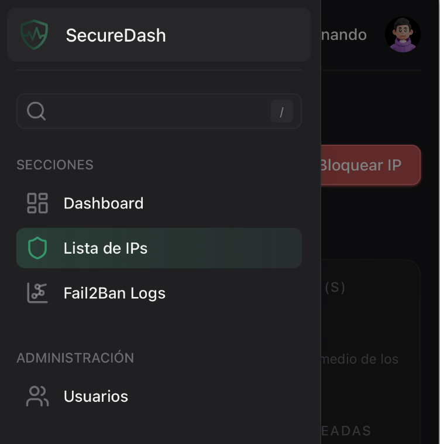

Navegación#
Aprende a navegar eficientemente por todas las secciones de Secure Dash y aprovecha al máximo la interfaz de usuario.
 Estructura General#
Estructura General#
Layout Principal#
Secure Dash utiliza un diseño moderno de sidebar que se adapta a diferentes tamaños de pantalla:

Componentes Principales#
- Header Superior - Navegación y usuario
- Sidebar Izquierdo - Menú principal
- Área de Contenido - Información principal
- Notificaciones - Alertas en tiempo real
 Sidebar y Menú Principal#
Sidebar y Menú Principal#
Estructura del Sidebar#

Secciones del Menú#
Secciones Generales
 Dashboard - Panel principal con métricas
Dashboard - Panel principal con métricas Fail2Ban Logs - Registros del sistema
Fail2Ban Logs - Registros del sistema Lista de IPs - IPs bloqueadas
Lista de IPs - IPs bloqueadas
Administración
 Usuarios - Gestión de usuarios del sistema
Usuarios - Gestión de usuarios del sistema
Elementos Interactivos#
Logo y Branding#
- Logo de Secure Dash en la parte superior
- Actúa como botón de inicio
- Siempre visible y accesible
Buscador Integrado#
- Búsqueda global en el sidebar
- Atajo de teclado: presiona
/ - Busca en contenido y navegación
Estados Visuales#
Navegación Activa#
Los elementos del menú muestran diferentes estados:
- Activo: Gradiente azul y texto resaltado
- Hover: Gradiente sutil al pasar el mouse
- Inactivo: Texto gris y sin fondo
Indicadores de Carga#
- Animación de pulso durante la navegación
- Feedback visual instantáneo
- Mantiene al usuario informado
 Header Superior#
Header Superior#
Elementos del Header#
Componentes Principales#
- Botón de Sidebar (móvil)
- Aparece solo en dispositivos móviles
-
Abre/cierra el menú lateral
-
Breadcrumbs
- Muestra tu ubicación actual
- Incluye ícono de escudo
-
Navegación jerárquica
-
Área de Usuario
- Avatar del usuario
- Nombre de bienvenida
- Acceso a configuración
Breadcrumbs Dinámicos#
Los breadcrumbs se actualizan automáticamente según tu ubicación:
| Página | Breadcrumb |
|---|---|
/app |
→ Fail2ban Logs |
/app/dashboard |
→ Dashboard |
/app/banned-ips |
→ Lista De Ips |
/app/users |
→ Gestión De Usuarios |
 Navegación Responsiva#
Navegación Responsiva#
Dispositivos Móviles#
En pantallas pequeñas (< 768px):
- Sidebar colapsado por defecto
- Botón hamburguesa en el header
- Navegación táctil optimizada
- Contenido adaptado al espacio disponible
Tablets#
En pantallas medianas (768px - 1024px):
- Sidebar visible pero más compacto
- Iconos prominentes para fácil acceso
- Gestos táctiles soportados
Escritorio#
En pantallas grandes (> 1024px):
- Sidebar completo siempre visible
- Hover effects mejorados
- Navegación con teclado optimizada
 Atajos de Teclado#
Atajos de Teclado#
Navegación Global#
| Atajo | Acción |
|---|---|
/ |
Enfocar búsqueda |
Escape |
Cerrar modales/hojas |
Tab |
Navegación secuencial |
Shift + Tab |
Navegación reversa |
Navegación por Secciones#
| Atajo | Destino |
|---|---|
Alt + D |
Dashboard |
Alt + L |
Logs |
Alt + I |
IPs Bloqueadas |
Alt + U |
Usuarios (admin) |
Consejo de Navegación
Los atajos de teclado mejoran significativamente la velocidad de navegación para usuarios frecuentes.
 Personalización#
Personalización#
Preferencias de Interfaz#
Tamaño de Sidebar#
- Auto-colapso en pantallas pequeñas
- Expansión manual disponible
- Estado recordado por sesión
Configuración de Tabla#
Para todas las tablas del sistema:
- Filas por página: 10, 25, 50
- Orden de columnas: Personalizable
- Filtros: Persistentes durante la sesión
 Función de Búsqueda#
Función de Búsqueda#
Búsqueda Global#
Activación#
- Haz clic en el campo de búsqueda del sidebar
- Presiona
/desde cualquier página - Comienza a escribir inmediatamente
Búsquedas Específicas#
Cada sección tiene su propia búsqueda avanzada:
- Logs: Por mensaje, nivel, fecha
- IPs: Por dirección, país, amenaza
- Usuarios: Por nombre, email, rol
 Enlaces y Navegación#
Enlaces y Navegación#
Tipos de Enlaces#
Enlaces Internos#
- Navegación instantánea sin recarga
- Estado preservado durante navegación
- Historial del navegador mantenido
Enlaces Externos#
- Indicadores visuales para enlaces externos
- Apertura en nueva pestaña (donde apropiado)
- Confirmación antes de salir del sistema
Navegación por Pestañas#
Secure Dash soporta navegación multi-pestaña:
- Estado independiente por pestaña
- Sincronización automática de datos
- Notificaciones en todas las pestañas activas
 Indicadores de Estado#
Indicadores de Estado#
Estados de Conexión#
La aplicación muestra indicadores visuales para:
Conectado#
- Punto verde en gráficos en tiempo real
- Actualizaciones automáticas funcionando
- WebSocket activo
Desconectado#
- Advertencia visible en interfaz
- Reintento automático de conexión
- Datos en caché mostrados
Sincronizando#
- Indicador de carga en header
- Animaciones sutiles durante actualización
- Feedback inmediato al usuario

 Mejores Prácticas#
Mejores Prácticas#
Navegación Eficiente#
Consejos de Navegación
- Usa atajos de teclado para navegación rápida
- Aprovecha breadcrumbs para orientación
- Mantén múltiples pestañas para comparar datos
- Usa búsqueda global para acceso directo
Organización del Trabajo#
Flujo Recomendado
- Inicia en Dashboard para visión general
- Revisa alertas en notificaciones
- Profundiza en logs según necesidad
- Gestiona IPs cuando sea necesario
- Administra usuarios (solo admins)
Solución de Problemas de Navegación#
| Problema | Solución |
|---|---|
| Sidebar no aparece | Refresca la página |
| Navegación lenta | Verifica conexión a internet |
| Enlaces no funcionan | Limpia caché del navegador |
| Breadcrumbs incorrectos | Navega usando el menú principal |